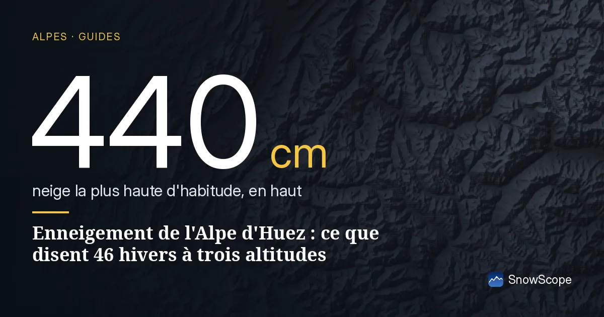
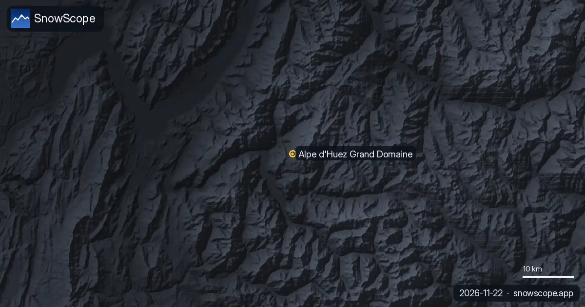

Enneigement de l'Alpe d'Huez : ce que disent 46 hivers à trois altitudes
Le Grand Domaine de l'Alpe d'Huez va de 1124 m, à Oz et Vaujany, à 3306 m au Pic Blanc : 2182 m de dénivelé, 163 km de pistes cartographiées et 82 remontées. Avec un tel écart d'altitude, parler de « l'enneigement de l'Alpe d'Huez » n'a de sens qu'en précisant où. Notre historique de 46 hivers le fait à trois hauteurs.
Consultez les prévisions neige en temps réel pour Alpe d'Huez Grand Domaine sur l'application SnowScopeHauteurs de neige, alertes poudreuse et carte 3D, gratuitement.

En bas : un hiver court
En bas du domaine (1124 m), le maximum hivernal habituel n'est que de 52 cm, entre 14 cm l'hiver le plus pauvre et 78 cm le plus riche. Un décembre habituel y laisse 15 cm. Les retours à Oz, Vaujany et Allemont vivent de la neige de culture pendant l'essentiel de la saison.
À mi-pente : la station elle-même
À mi-pente (2215 m, l'altitude des grands plateaux au-dessus de la station), la première neige tient avant le 18 octobre dans la moitié des hivers, et la hauteur habituelle passe de 62 cm en décembre à 110 cm en janvier, 150 cm en février et 154 cm en mars, le mois le plus enneigé. Le maximum habituel est de 184 cm.
La mi-pente garde 50 cm ou plus pendant 18 semaines dans neuf hivers sur dix, et 23 semaines dans la moitié. La semaine la plus sûre est la semaine 10, début mars, avec 159 cm habituels.
Au Pic Blanc : l'autre monde
Au sommet (3306 m), le maximum habituel atteint 440 cm. Décembre y donne déjà 158 cm, mars 318 cm et avril 372 cm, le mois le plus enneigé en haut. C'est l'altitude de la Sarenne et des glaciers, celle qui fait la réputation du domaine au printemps.
Décembre : la question qu'on nous pose le plus
Un décembre habituel donne 15 cm en bas, 62 cm à mi-pente et 158 cm au sommet. Neuf décembres sur dix avaient au moins 31 cm à mi-pente, mais seulement 84 cm au sommet dans le pire cas ; un décembre généreux monte à 105 cm à mi-pente. Pour les vacances de Noël, viser les secteurs hauts et les pistes damées.
Mois par mois à trois altitudes
En décembre, un hiver habituel donne 15 cm en bas (1124 m), 62 cm à mi-pente (2215 m) et 158 cm au sommet (3306 m). En janvier, un hiver habituel donne 30 cm en bas (1124 m), 110 cm à mi-pente (2215 m) et 258 cm au sommet (3306 m). En février, un hiver habituel donne 39 cm en bas (1124 m), 150 cm à mi-pente (2215 m) et 293 cm au sommet (3306 m).
En mars, un hiver habituel donne 33 cm en bas (1124 m), 154 cm à mi-pente (2215 m) et 318 cm au sommet (3306 m). En avril, un hiver habituel donne 15 cm en bas (1124 m), 133 cm à mi-pente (2215 m) et 372 cm au sommet (3306 m).
Un hiver pauvre et un hiver riche
L'écart compte autant que la moyenne. À mi-pente, neuf marss passés sur dix avaient au moins 117 cm et un sur dix 197 cm ou plus ; au sommet, la même fourchette va de 251 à 399 cm.
Sur l'hiver entier, le maximum à mi-pente est allé de 134 cm l'hiver le plus pauvre à 250 cm le plus riche, autour de 184 cm habituels ; au sommet de 287 à 659 cm autour de 440 cm. La neige a couvert le sol à mi-pente 218 jours dans un hiver habituel, et la première neige s'y est installée avant le 18 octobre dans la moitié des hivers.
La tendance sur 46 hivers
Le maximum habituel au sommet est passé de 452 cm sur les 15 premiers hivers de la série à 405 cm sur les 15 derniers ; à mi-pente, de 186 à 200 cm. Les jours avec de la neige au sol à mi-pente sont passés de 231 à 210. L'hiver dernier a culminé à 211 cm à mi-pente.
Conseils aux skieurs
- Pour Noël, réserver haut et skier les plateaux et le Pic Blanc ; les retours en vallée sont sur neige de culture.
- Mars est le mois le plus enneigé à mi-pente, avril au sommet : la fin de saison vaut le détour.
- Nos hauteurs sont une estimation pour le domaine d'après les hivers passés, pas des mesures de la station ; l'ouverture des pistes est sur le site officiel.
- La Sarenne se skie le matin au printemps, avant que la neige ne se transforme.
Références et crédits
- Wikipédia, « Alpe d'Huez », consulté le 22 November 2026 : Pic Blanc, villages reliés, piste de la Sarenne. fr.wikipedia.org/wiki/L%27Alpe_d%27Huez
À propos de ces chiffres
Chiffres de neige : historique SnowScope, 46 hivers passés (1980-81 à 2025-26) à trois altitudes de la station (une estimation pour une zone, pas les bulletins de la station). Remontées, pistes et accès : les sources ci-dessous, vérifiées à la date indiquée.
Bulletins d'avalanche officiels: Météo-France – Bulletin d'estimation du risque d'avalanche
Citer ce bulletin
Pour la recherche, l'enseignement ou la presse : chiffres et graphiques réutilisables librement sous CC BY 4.0 avec cette citation.
SnowScope (2026), Enneigement de l'Alpe d'Huez : ce que disent 46 hivers à trois altitudes, https://snowscope.app/blog/fr/2026/11/alpe-dhuez-enneigement-46-hivers-trois-altitudes.html, consulté le 2026-11-22
SnowScope (Atlas Labs). (2026, November 22). Enneigement de l'Alpe d'Huez : ce que disent 46 hivers à trois altitudes. SnowScope snow reports. https://snowscope.app/blog/fr/2026/11/alpe-dhuez-enneigement-46-hivers-trois-altitudes.html
BibTeX
@misc{snowscope2026alpedhuezenneigement46hi,
author = {{SnowScope (Atlas Labs)}},
title = {Enneigement de l'Alpe d'Huez : ce que disent 46 hivers à trois altitudes},
year = {2026},
month = nov,
howpublished = {\url{https://snowscope.app/blog/fr/2026/11/alpe-dhuez-enneigement-46-hivers-trois-altitudes.html}},
note = {Published 2026-11-22 10:24 UTC; accessed 2026-11-22}
}· CC BY 4.0 · Méthodes, données et outils →
Suivre Alpe d'Huez Grand Domaine
Gratuit : un message quand la neige arrive, et la météo chaque matin.